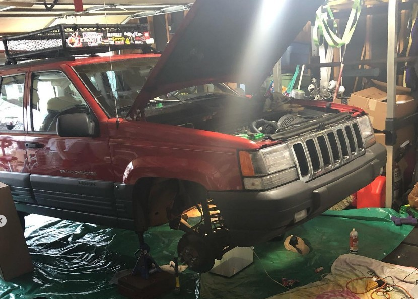
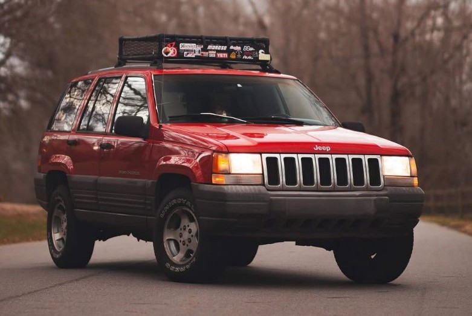

1997 Jeep Grand Cherokee Overhaul
2017 - 2022 | Mechanical Restoration & Cross-Country Adventure
2
YEARS OF WORK
80,000
MILES DRIVEN (BY ME)
$3,200
BUDGET
A family gift that arrived inoperable became my crash course in automotive engineering and the vehicle for an unforgettable cross-country adventure at 18. This project represents my ability to learn complex systems from scratch and deliver reliable results under constraints.
The Challenge
Received as a non-running family hand-me-down, this Jeep became my mechanical education. With no budget for professional repairs, every solution required innovation, research, and hands-on problem solving.
BEFORE RESTORATION
AFTER RESTORATION
Key Repairs & Modifications
Engine Overhaul
Complete teardown and rebuild of the 4.0L inline-6 engine, diagnosing and replacing worn components
Suspension Work
Spring replacement and block lift to improve clearance and ride quality
Oil System
Full oil pan replacement to address leaks and improve lubrication
Axle Service
Complete axle drop, inspection, and reassembly
Electrical
Wiring diagnostics and repairs using factory diagrams
Road Trip Prep
Systems verification and reliability testing before the cross-country journey
The Adventure
At 18, with the Jeep finally roadworthy, I embarked on a cross-country trip from coast to coast with my best friend. The journey tested every repair and modification, proving the Jeep's reliability through mountains, deserts, and everything in between. We met people across the country, stayed at hotels, explored areas and got to learn from our surroundings.
This journey became the ultimate validation of the mechanical work - covering 2,000 miles without major issues, just one minor repair in Kansas that we handled ourselves. The Jeep had transformed from a non-running project to a trusted adventure vehicle.
Epilogue: A Mechanical Farewell
After safely returning from California and serving faithfully for years, the Jeep ultimately succumbed to its age in 20??. What began as a free non-runner gave me 80,000 miles of education and adventure - far exceeding any reasonable expectation.
This project taught me that great engineering isn't about perfection, but about creating something that exceeds its limitations through care and understanding. The Jeep's final lesson was that even the best-maintained machines have finite lifespans, but the skills and memories endure.